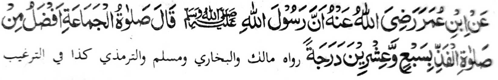
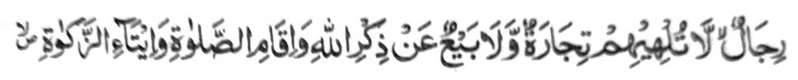

Lagid o kiya-aloy niyan ko Pamkasan, a madakel a di-i zambayang lalayon ogaid na di ran sisiyapen so Kambarajoma. So Nabi (Sallallaho 'Alaihi Wasallam) na tanto niyan a inipami-is so kapamangeped ko Kambarajoma sa lagid den o kinipami-is niyan ko Sambayang. Giyangka-iya a ba-adan na dowa ka pinto. So paganay ron na piyagosay niyan so balas o Kambarajoma na so ika dowa na piyagosay niyan so balas o kindaraynonen non.

Miyakathitayan ko (Abdullah) Ibn Omar (Radhiallao ’Anho) a mata-an a so Rasulollah (Sallallaho Alaihi Wasallam) na pitharo iyan, "So Sambayang a barajoma' na makalelebi ko Sambayang a tarambisa sa dowa polo ago pito ka daradat.
O aya gi-i tano kipamayandegen ko Sambayang tano na antano maka kowa sa baIas ko Allah, na ino tano di penggolalanen si-i sa Masjid, a ron sabap a kaphakakowa tano sa dowa polo ago pito takep a milelebi niyan. Da-a tao a ba malaIong a ba niyan di makowa so dowa poIo a go pito takep a Iaba a miyaka-ito ito a kakharomasay niyan non. Ogaid na da-a tanto a inengka tano ko khaIaba tano sabap ko manga amal tano! Daden a sabapa-i a rowar sa di tano paga-arega-an so Agama tano ago so manga balas. Tanto a piyakarata-rata sa ginawa a tanto tano den a gi-i melogat ko kakowa-a tano ko maito a laba sangka-iya a donya, ogaid na da-a panamar tano ko manga laba sa AIongan a Maori, a khakowa-an tano sa dowa polo ago pito a kapakaleIebi niyan ko maito a khipagoman tano a galebek. Aya ipenda-owa tano na o song tano sa Masjid ka antano makapamangeped ko barajoma' na khakeIeban tano so tinda tano na kasabapan sa kalapis tano. Giyangka-iya sabap ago so manga lagid iyan a di niyan kha-alangan so tao a tarotop so paratiyaya niyan ko Kala o Allah a, ago so Katharo Iyan ago mai-inengka iyan so arga o manga limo ago balas sa Alongan a Maori. Sabap ko lagida-i a manga tao na pitharo o Allah si-I kiran.

"So manga mama a da kiran makasendod so kapamasa go so kaphasa pho-on ko tadem ko Allah go so kipamayandegen ko Sambayang..[Soorah Nur: 37]
Miyapanothol makapantag ko Salim Saddad (Rahmatullah 'Alaihi) (a padagang ago Auliya) a igira miyaneg iyan so bang na pephamoti sekaniyan ago pethabaden. Pethikaras tomindeg, na phagawa-an niyan so tinda niyan a kaleleka-an na go gi-i niyan imbayok angka-iya a manga pananaro-on: -
1. "Igira miyananalo so phakapananalo Neka na nggaga-an ako tomindeg ka zembagen aken so (pananawag o) Kadenan a Mala a daden a lagid Iyan."
2 "Inonotan ko so manga pananawag sa tarotop a kapangongonotan ago babaya, 'Kati-i ako, Hay Maginawa a Kadenan."'
3. So paras aken na pephamoti sa mamala ago kalek, ago so kakhatembang aken Reka na miyaliwat ako niyan ko langon o saIakao a manga ped a galebek."
4. "Pezapa ako reka, ka daden pen a mala raken i arga inonta so pananadem Reka. Dapen a mapiya a khaneg aken a rowar ko kapiya o Ngaran Ka. "
5. "Hay, ino ba aden a masa a makaphagepeda Ta? So rara-oten a gagao na ayabo a kapipiya ginawa niyan na igira ped iyan so pekhabaya-an niyan."
6. "So sekaniyan a so manga mata niyan na miya-ilay niyan so Sindao o Kalano o Ka na diden katayo-an. Ka iphatay niyan a gi-i iyan Reka kazingayo-a."
Miya-aloy sa Hadith: "So manga tao a lalayon sa Masjidna siran i manga tao ron. So manga Mala-ikat na aya iran bolayoka ago pembentel kiran igira pekhasakit siran ago phagogop kiran igira zisi-i siran ko manga galebekan niran."